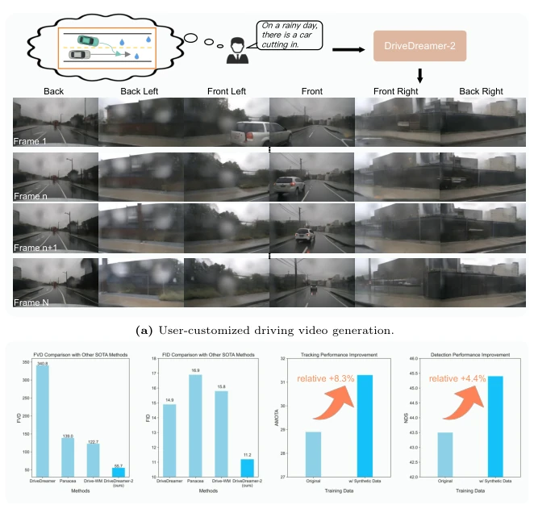
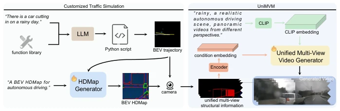
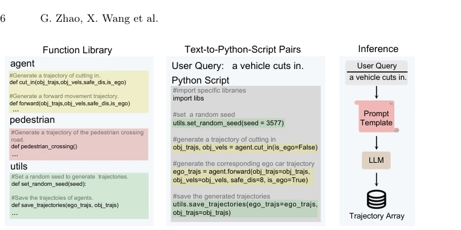
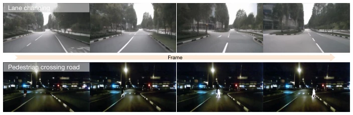
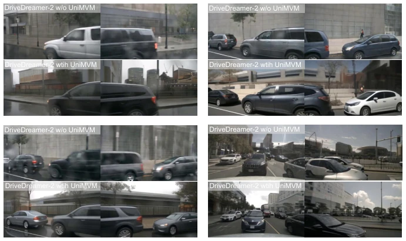
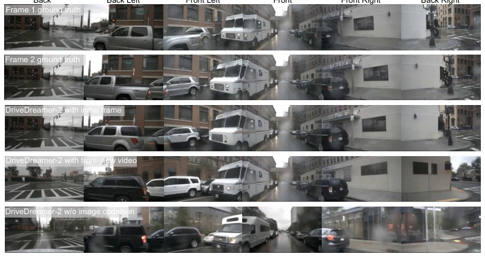
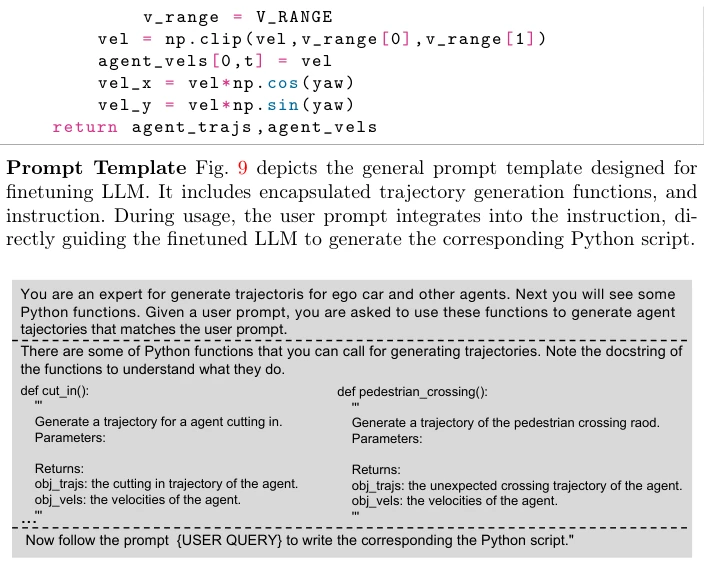
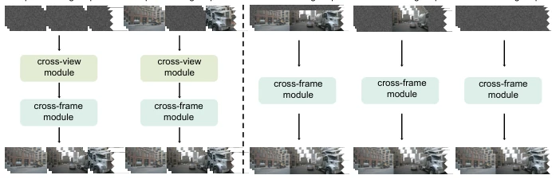
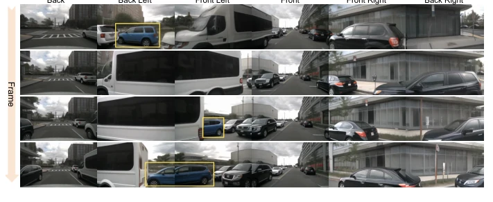
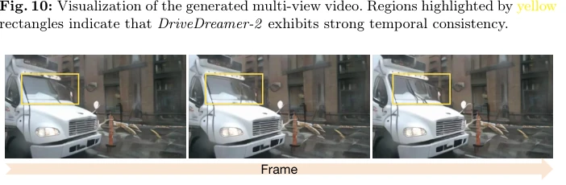

DriveDreamer-2 attempts to supercharge the autonomous driving world model using LLMs, converting text directly into multi-view videos. The highlights are indeed formidable, with FID/FVD topping the leaderboard, capable of generating long-tail scenarios such as 'sudden pedestrian emergence' ('ghost probing'), and the downstream perception training performance is also satisfactory. However, do not get too excited too soon; are the trajectories generated by LLMs reliable? Will HDMap generation have logical flaws? After all, SOTA on nuScenes does not represent real-world road testing capability. Moreover, although UniMVM unifies the viewpoints, it is essentially a diffusion model, and the inference cost is estimated to be high. Claimed to be 'user-friendly,' but actually requires some knowledge of Prompt engineering, and physical engine constraints are not mentioned; will the generated cars interpenetrate? For safety-critical tasks, this 'hallucination' risk cannot be ignored.
Existing world models (e.g., DriveDreamer [59], Drive-WM [62]) heavily rely on structured conditions (3D boxes, HDMaps) or real frames, leading to poor interactivity and limited diversity. Although MagicDrive [7] etc. can generate videos, they are also constrained by complex annotations. Autonomous driving requires a large number of long-tail scenarios (e.g., hard cut-in) to train perception models, but real data is scarce and annotation is expensive. This paper aims to address how to generate diverse, traffic-rule-compliant multi-view driving videos solely based on text prompts, lower the data construction threshold, achieve true 'what you think is what you get' scenario simulation, and solve the problem that existing methods find it difficult to flexibly customize specific traffic flows.

Fig. 1: DriveDreamer-2 demonstrates powerful capabilities in generating multi-view driving videos. DriveDreamer-2 can produce driving videos based on user descriptions, which improves the diversity of the synthetic data. Besides, the generation quality of DriveDreamer-2 surpasses other state-of-the-art methods and effectively enhances downstream tasks.
The overall process is divided into three steps: text-to-trajectory, trajectory-to-HDMap, video generation. First, construct a function library to fine-tune the LLM, converting user text into Agent trajectories (e.g., cut-in, lane change). Second, use a diffusion model to generate HDMap, conditioned on trajectories to ensure background and foreground traffic flow consistency. Finally, propose UniMVM, based on the DriveDreamer framework, splicing multi-view videos into a unified Patch, using a Mask mechanism to unify spatial consistency within and across viewpoints, replacing traditional View-wise Attention, improving spatiotemporal coherence.

Fig. 2: The overall framework of DriveDreamer-2 involves initially generating agent trajectories according to the user query, followed by producing a realistic HDMap, and finally generating multi-view driving videos.

Fig. 3: The overview of customized trajectory generation. Initially, we leverage the established function library to assemble Text-to-Python-Script pairs. Subsequently, the constructed dataset is employed to finetune LLM. Finally, the customized trajectories is generated by LLM based on user query.

Fig. 6: User-customized driving videos generated by DriveDreamer-2. The top row depicts a scene where the ego car changes lanes, while the bottom row shows an unex- pected pedestrian crossing the road at night.
Based on the nuScenes dataset, comparing DriveDreamer [59], Drive-WM [62], DrivingDiffusion [34], etc. Metrics used are FID, FVD, and downstream 3D detection/tracking performance. DriveDreamer-2 achieves SOTA under unconditional, single-view, and first-frame conditions, FID 11.2, FVD 55.7. Ablation experiments prove that SVD backbone and UniMVM module significantly improve quality. Synthetic data auxiliary training StreamPETR, detection mAP improves by about 4%, tracking AMOTA improves by about 8%, validating the effectiveness of synthetic data.

Fig. 7: Visualization comparison between DriveDreamer-2 generation with and with- out UniMVM. The upper part depicts generation without UniMVM, while the lower part illustrates generation with UniMVM. It is evident that the inclusion of UniMVM results in higher multi-view consistency in the generated content.

Fig. 8: Visualization comparison with different conditions. Under different image con- ditions, DriveDreamer-2 produces videos with a high level of multi-view consistency. Using the 1st frame image (row 1) as a condition, the diversity of the generated second frame (row 3) is constrained, which closely resembles the ground truth second frame (row 2). Employing the front-view video as a condition results in increased generation diversity (row 4), only the front-view image aligns closely with the ground truth (row 2). Strikingly, in the absence of image as a condition, DriveDreamer-2 produces the highest diversity (row 5). The generated colors of the cars and the street backgrounds differ significantly from the ground truth (row 2).

Fig. 9: Our prompt template designed for finetuning LLM. It contains information about functions, and instruction. The user query is inserted into the placeholder {USER QUERY}.
其他图片Other Figures

Fig. 5: The comparison of multi-view video generation paradigms. All structural con- ditions and text prompts are omitted here to emphasize the distinctions between our UniMVM and previous methods. By adjusting the mask, UniMVM can generate videos conditioned on the initial frame, front view video, and without image input.

Fig. 10: Visualization of the generated multi-view video. Regions highlighted by yellow rectangles indicate that DriveDreamer-2 exhibits strong temporal consistency.

Fig. 11: A generated video of a rainy day scene. The movement of the windshield wipers (highlighted by yellow rectangles) demonstrates that as DriveDreamer-2 possesses a high level of scene understanding.